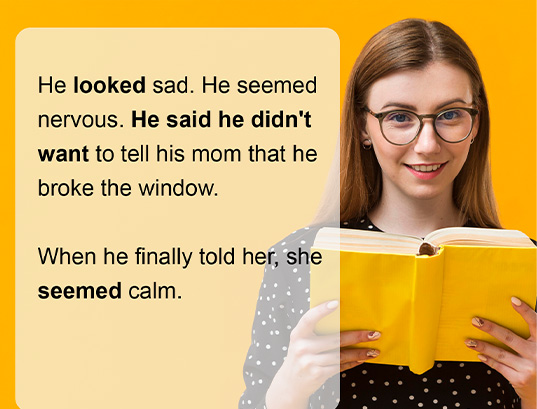

ENGLISH
TAKING A CLOSER LOOK
AT LANGUAGE: PART 3
What You Should Know
Before you begin, you should:
- Know how to identify tone.
- Understand how to identify figurative language.
- Recognize details.
- Know how to determine the main idea.
Lesson Expectations
Before you begin, you should:
- Analyze the author's purpose.
- Analyze and develop an interpretation of a literary work by describing an author's point of view.
- Use organizational strategies and tools (i.e., chart).
Tone vs. Mood: Before you begin this lesson, you should know how to identify tone in writing. Let’s take a moment for a quick review. Tone is the author’s attitude towards a subject, and mood is the atmosphere created by the author.
POINT OF VIEW
A different perspective can change the way we see things.
Take a look at this video and learn about how humans perceive reality. Our reality is actually a translation formed by our mind.
How do we know when we can trust our eyes? How do we know when we can trust the perspective we use? Think about how our perspective influences the way we read.
LESSON KEYWORDS
POINT OF VIEW
Is the perspective from which a story is told.
It can be first, second or third person.
NARRATIVE POINT OF VIEW
What is Point of view? When discussing elements of literature, we can look at two aspects: the narrator's point of view and the author's point of view.
Take a moment to study Narrative Point of View a little closer using the flip cards below.
First-Person Narration
What can be shown is limited to the character's observation and thoughts, any skewed perceptions in the narrator, will be passed on to the reader.
Second-Person point of view
Point of View This point of view makes the reader part of the story, which may be awkward, thus this point of view is rarely used.
Third person point of View
The narrator does not take part in the story.
Third-Person Omniscient
The narrative voice can render information from anywhere, including the thoughts and feelings of any of the characters. This all-knowing perspective allows the narrator to roam freely in the story's setting and even beyond.
Third-Person Limited
Sometimes called third-person sympathetic, the narrative voice can relate what is in the minds of only a select few characters (often only one, the point-of-view character).
Third-Person Objective
The narrator renders explicit, observable details and does not have access to the internal thoughts of characters or background information about the setting or situation. A character's thoughts, for example, are inferred only by what is expressed openly, in actions or in words.
IMAGES AND WORDS
Read the poem "The Dirt Eaters" by Virgil Suarez. Concentrate on important words that create images or that make a strong statement. Make notes about your thoughts and interpretations. Remember, a writer is writing for a purpose. Read this poem with a critical eye.
The Dirt Eaters
Virgil Suárez
Whenever we grew tired and bored of curb ball, of encircling the scorpions we found under rocks by the mother-in-law tongue within a fiery circle of kerosene and watching as they stung themselves to death, we ate dirt; soft, grainy, pretend chocolate dirt, in our fantasies sent to us by distant relatives in El Norte. Fango. We stood in a circle, wet the dirt under our bare feet, worked with our fingers to crumble the clogs with our nails, removed the undesired twigs, pebbles, and beetles. Dirt—how delicious. How filling.
We ate our share of it back then. Beto, the youngest, warned us not to eat too much; it could make us sick, vomit, give us the shits, or even worse, worms.
We laughed. We ridiculed him. We chanted after him:
"¡Lo que no mata, engorda!
¡Lo que no mata, engorda!"
What doesn’t kill you makes you fat, and stronger.
Activity #1
"THE DIRT EATERS"
BY VIRGIL SUAREZ.
Now let's examine the author's point of view.
- What is the setting in the poem?
- Which words or phrases provide you with this information?
- Does the setting of the poem influence the author's point of view?
Take some notes to help analyze the poem. Then answer the questions about the author´s point of view.
-
How does the author feel about eating dirt during his childhood?
A) DisgustedB) ExcitedC) Indifferent
-
What is the significance of encircling the scorpions in the poem?
A) They symbolize childhood innocence.B) They represent the dangers of growing up.C) They are just a way to pass the time.
-
How does the author and his friends react to Beto's warning about eating too much dirt?
A) They take his advice seriously.B) They ignore it and continue eating dirt.C) They mock him.
-
How does the author's experience of eating dirt during his childhood connect to the overall theme of the poem?
A) It highlights the poverty and lack of resources in the author's community.B) It symbolizes the resilience and resourcefulness of the author and his friends.C) It shows the author's longing for a better life.
AUTHOR'S POINT OF VIEW
OF A DISTANT PAST
Author's point of view does not only deal with how the story is told, but it also deals with the author's purpose. It deals with these types of questions:
Describe what is the author's opinion about...?
Explain what the author thinks of....
Why did the author write this piece?
What point does the author make?
What do you think the author means when he or she writes...? What makes you think this?
What issues is the author shining light upon? How is the author accomplishing this?
What is the author's position?
Why does the author use the images, word choice, etc. to describe the subject?
How does the author use the word choice or point of view to achieve his/her purpose?
As you read, whether it may be fiction, nonfiction, or poetry, you should keep these questions in mind. Remember, a writer is writing for a purpose. A writer does not choose words arbitrarily. He or she chooses the right word or image to make a point, to provide the reader with his or her point of view and purpose.
Rain
Claribel Alegria
As the falling rain
trickles among the stones
memories come bubbling out.
It’s as if the rain
had pierced my temples.
Streaming
streaming chaotically
come memories:
the reedy voice
of the servant
telling me tales
of ghosts.
They sat beside me
the ghosts
and the bed creaked
that purple-dark afternoon
when I learned you were leaving forever,
a gleaming pebble
from constant rubbing
becomes a comet.
Rain is falling
falling
and memories keep flooding by
they show me a senseless
World
a voracious
World—abyss
Ambush
whirlwind
Spur but I keep loving it because I do because of my five senses, because of my amazement every morning, because forever, I have loved it without knowing why.
Activity #2
"RAIN" BY CLARIBEL
ALEGRIA.
Now let's examine the author's point of view.
- What is the setting in the poem?
- Which words or phrases provide you with this information?
- Does the setting of the poem influence the author's point of view?
Take some notes to help analyze the poem. Then answer the questions about the author´s point of view.
-
How does the author feel about the falling rain?
A) DispleasedB) NostalgicC) Indifferent
-
What is the significance of the stones in the poem?
A) They symbolize the author's memories.B) They represent the passage of time.C) They have no significance.
-
How does the author feel about the memories that come to him during the rain?
A) They are painful.B) They are chaotic but loved.C) They are welcomed.
-
How does the author feel about the world?
A) He hates itB) He is indifferent to it.C) He loves it despite its senselessness.
-
Why does the author love the world?
A) Because of his five senses.B) Because of his amazement.C) Both A and B
ASSIGNMENT:
TAKING A CLOSER LOOK
AT LANGUAGE: PART 3
Drag the correct answer from the right to picture:
Now that you have studied this lesson, let's review what we have learned. For this activity, you will need to pull the description into the perspective of the corresponding author. Read carefully and analyze where each description belongs.
1. The reader is limited to the observations and thoughts of the narrator. |
Second-Person Point of View |
2. The way the narrator sees things might not be accurate and it can affect the reader's understanding of the story. |
|
3. Involves addressing the reader directly, making them a part of the story. |
First Person Narrator |
4. This style is not commonly used as it can make the story feel awkward. |
|
5. The narrator is not a character in the story. |
Third-Person Limited |
6. The narrator is not involved in the events or feelings of the characters. |
|
7. Narrator knows everything about the characters and story, including thoughts and feelings. |
Third-Person Point of View |
8. Narrator can move freely throughout the story and setting. |
|
9. Narrator only shares thoughts and feelings of one character, often called point-of-view character. |
Third-Person Objective  |
10. Allows reader to understand and empathize with the point-of-view character. |
|
11. Narrator only shows observable events, not thoughts or background information. |
Third-Person Omniscient |
12. Characters thoughts and feelings are inferred from actions or words. |
|
Answer the following questions.
|